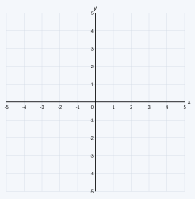
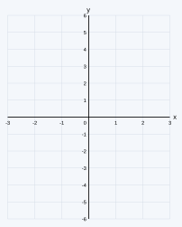
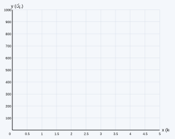
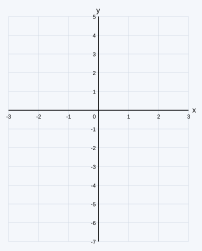
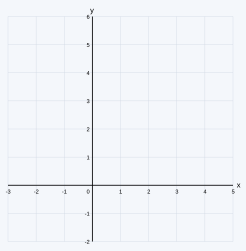
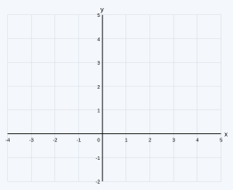
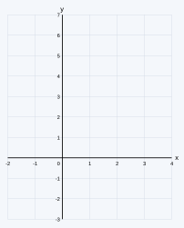

උපදෙස්: සියලුම ප්රශ්නවලට පිළිතුරු සපයන්න. සියලු ගණනය කිරීම් පැහැදිලිව දක්වන්න. ප්රස්තාර දී ඇති ඛණ්ඩාංක තල මත පිළිවෙළට අඳින්න.
ඛණ්ඩාංක තලයක A = (−3, −2) හා B = (3, −2) ලක්ෂ්ය දෙකකි.
(i) පහත දී ඇති ඛණ්ඩාංක තලයේ A හා B ලක්ෂ්ය ලකුණු කරන්න.
(ii) ABCD යනු AB ට ඉහළින් පිහිටි සමචතුරස්රයක් වන පරිදි C හා D ලක්ෂ්ය ලකුණු කර, C හා D හි ඛණ්ඩාංක ලියන්න.
(iii) සමචතුරස්රයේ AB, BC, CD හා DA පාදවල සමීකරණ ලියන්න.
(iv) x අක්ෂයට හා y අක්ෂයට සමාන්තර වන, සමචතුරස්රයේ සමමිති අක්ෂ දෙකෙහි සමීකරණ ලියන්න.

y = 2x ශ්රිතයේ ප්රස්තාරය ඇඳීම සඳහා සකස් කළ අසම්පූර්ණ අගය වගුවක් පහත දැක්වේ.
| x | −2 | −1 | 0 | 1 | 2 |
|---|---|---|---|---|---|
| y | −4 | ...... | 0 | ...... | 4 |
(i) වගුවේ හිස්තැන් පුරවන්න.
(ii) පහත දී ඇති ඛණ්ඩාංක තලයේ y = 2x හි ප්රස්තාරය අඳින්න.
(iii) ප්රස්තාරය ඇසුරෙන්, x = 1.5 වන විට y හි අගය සොයන්න.
(iv) ප්රස්තාරය ඇසුරෙන්, y = −3 වන විට x හි අගය සොයන්න.
(v) (−1, 2) ලක්ෂ්යය මෙම ප්රස්තාරය මත පිහිටයිද? හේතු සහිතව පිළිතුරු දෙන්න.

සහල් 1 kg ක මිල රු. 200 කි. සහල් ප්රමාණය (kg) x ලෙස ද, එහි මිල (රුපියල්) y ලෙස ද ගන්න.
(i) x හා y අතර සම්බන්ධය ශ්රිතයක් ලෙස ලියන්න.
(ii) පහත අගය වගුව සම්පූර්ණ කරන්න.
| සහල් (kg) x | 1 | 2 | 3 | 4 |
|---|---|---|---|---|
| මිල (රු.) y | ...... | ...... | ...... | ...... |
(iii) පහත දී ඇති කොටු දැල මත ශ්රිතයේ ප්රස්තාරය අඳින්න.
(iv) ප්රස්තාරය ඇසුරෙන්, සහල් 2.5 kg ක මිල සොයන්න.
(v) ප්රස්තාරය ඇසුරෙන්, රු. 700 කට මිලදී ගත හැකි සහල් කිලෝග්රෑම් ගණන සොයන්න.

y = 2x − 1 ශ්රිතයේ ප්රස්තාරය ඇඳීම සඳහා සකස් කළ අසම්පූර්ණ අගය වගුවක් පහත දැක්වේ.
| x | −2 | −1 | 0 | 1 | 2 |
|---|---|---|---|---|---|
| y | −5 | ...... | −1 | ...... | 3 |
(i) වගුවේ හිස්තැන් පුරවන්න.
(ii) පහත දී ඇති ඛණ්ඩාංක තලයේ ශ්රිතයේ ප්රස්තාරය අඳින්න.
(iii) ප්රස්තාරයේ අනුක්රමණය හා අන්තඃඛණ්ඩය ලියන්න.
(iv) (4, k) ලක්ෂ්යය මෙම රේඛාව මත පිහිටයි නම්, k හි අගය සොයන්න.
(v) (ii) හි ඇඳි රේඛාවට සමාන්තර වූ ද (0, 2) ලක්ෂ්යය හරහා යන්නා වූ ද සරල රේඛාවේ සමීකරණය ලියන්න.

y = −x + 3 ශ්රිතයේ ප්රස්තාරය ඇඳීම සඳහා සකස් කළ අසම්පූර්ණ අගය වගුවක් පහත දැක්වේ.
| x | −2 | −1 | 0 | 1 | 2 | 3 | 4 |
|---|---|---|---|---|---|---|---|
| y | 5 | ...... | 3 | ...... | 1 | ...... | −1 |
(i) වගුවේ හිස්තැන් පුරවන්න.
(ii) පහත දී ඇති ඛණ්ඩාංක තලයේ ශ්රිතයේ ප්රස්තාරය අඳින්න.
(iii) ප්රස්තාරයේ අන්තඃඛණ්ඩය ද, එය x අක්ෂය හමු වන ලක්ෂ්යයේ ඛණ්ඩාංක ද ලියන්න.
(iv) ප්රස්තාරය ඇසුරෙන්, x = 1.5 වන විට y හි අගය ද, y = 4 වන විට x හි අගය ද සොයන්න.
(v) x අක්ෂයේ ධන දිශාව සමඟ ප්රස්තාරය වාමාවර්තව සාදන කෝණය සුළු කෝණයක්ද මහා කෝණයක්ද? හේතුව දක්වන්න.

ප්රස්තාර නොඅඳිමින් මෙම ප්රශ්නයට පිළිතුරු සපයන්න. සරල රේඛා හයක සමීකරණ පහත දැක්වේ.
(a) y = 3x + 2 (b) y = −2x + 5 (c) y = ½x − 4
(d) 2y = 4x + 6 (e) y + 3x = 1 (f) y = 3x − 1
(i) (d) හා (e) සමීකරණ y = mx + c ආකාරයට ලියන්න.
(ii) එක් එක් සරල රේඛාවේ අනුක්රමණය හා අන්තඃඛණ්ඩය ලියන්න.
(iii) එක් එක් රේඛාව x අක්ෂයේ ධන දිශාව සමඟ වාමාවර්තව සාදන්නේ සුළු කෝණයක්ද මහා කෝණයක්ද යන්න සඳහන් කරන්න.
(iv) මෙම රේඛා අතුරින් එකිනෙකට සමාන්තර වන රේඛා දෙක කවරේද? හේතුව දක්වන්න.
පහත විස්තර කර ඇති එක් එක් සරල රේඛාවේ සමීකරණය y = mx + c ආකාරයෙන් ලියන්න.
(i) අනුක්රමණය = 3 හා අන්තඃඛණ්ඩය = −2 වන රේඛාව.
(ii) අනුක්රමණය = −1 හා අන්තඃඛණ්ඩය = 4 වන රේඛාව.
(iii) y = 2x + 5 රේඛාවට සමාන්තර වන, අන්තඃඛණ්ඩය −3 වන රේඛාව.
(iv) මූල ලක්ෂ්යය හා (2, 6) ලක්ෂ්යය හරහා යන රේඛාව.
(v) (0, 1) හා (2, 5) ලක්ෂ්ය හරහා යන රේඛාව.
2x + 3y = 6 සමීකරණයෙන් දැක්වෙන සරල රේඛාව සලකන්න.
(i) සමීකරණය y = mx + c ආකාරයට ලියන්න.
(ii) රේඛාවේ අනුක්රමණය හා අන්තඃඛණ්ඩය ලියන්න.
(iii) රේඛාව x අක්ෂය හා y අක්ෂය හමු වන ලක්ෂ්යවල ඛණ්ඩාංක සොයන්න.
(iv) (iii) හි සොයාගත් ලක්ෂ්ය දෙක භාවිතයෙන්, පහත දී ඇති ඛණ්ඩාංක තලයේ රේඛාවේ ප්රස්තාරය අඳින්න.
(v) (−3, 4) ලක්ෂ්යය මෙම රේඛාව මත පිහිටන බව පෙන්වන්න.

y = x + 1 හා y = −2x + 4 ශ්රිතවල ප්රස්තාර ඇඳීම සඳහා සකස් කළ අසම්පූර්ණ අගය වගු පහත දැක්වේ.
y = x + 1
| x | −1 | 0 | 1 | 2 | 3 |
|---|---|---|---|---|---|
| y | 0 | ...... | 2 | ...... | 4 |
y = −2x + 4
| x | −1 | 0 | 1 | 2 | 3 |
|---|---|---|---|---|---|
| y | 6 | ...... | 2 | ...... | −2 |
(i) වගු දෙකෙහිම හිස්තැන් පුරවන්න.
(ii) පහත දී ඇති එකම ඛණ්ඩාංක තලයේ ප්රස්තාර දෙකම අඳින්න.
(iii) එක් එක් ප්රස්තාරයේ අනුක්රමණය හා අන්තඃඛණ්ඩය ලියන්න.
(iv) රේඛා දෙක ඡේදනය වන ලක්ෂ්යයේ ඛණ්ඩාංක ලියන්න.
(v) (iv) හි පිළිතුර භාවිතයෙන්, x + 1 = −2x + 4 වන x හි අගය ලියන්න.
